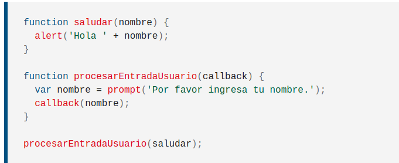
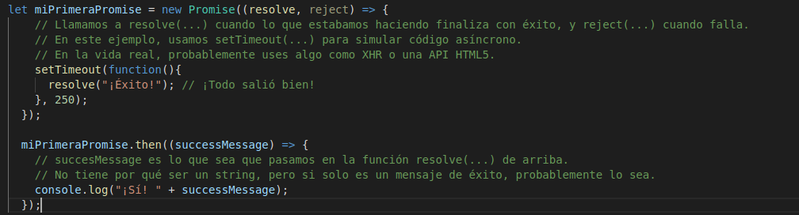
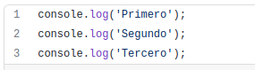
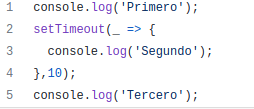

és como se conoce al lenguaje JavaScript cuando se utiliza sin ninguna librería o framework
El ECMA script es el estandard i el Javascript la implementacio
El va crear Brendan Eich i era de la empresa Netscape Communications
Es una expresió de una funciona, no te arguments o paraules clau. Va apareixer 2015.
funció que pasa a altre funcio com un argument, que desprñes invoca dins de la funcio externe per poder completar la operació
Es utilitzat per operacions asincrones, una promesa representa un valor que pot estar disponible ara, en el futur o mai.
La programación síncrona se ejecuta en secuencia, hasta que una no termine la otra no comenzará.
a programación asíncrona no hace que nuestro código sea más rápido, sino que facilita que se pueden ejecutar varios procesos al mismo tiempo
